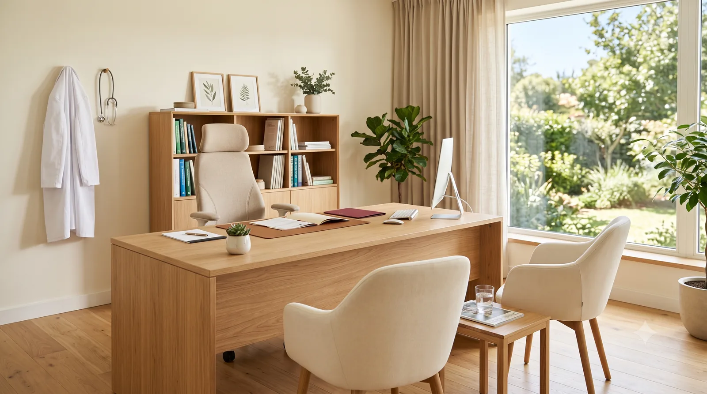

Cardiólogo en Elche · Clínica Elche Salud
Qué ocurre, cuánto dura y qué conviene traer

Esta página explica cómo funciona la consulta: qué ocurre, cuánto dura y qué conviene traer. La idea es que llegues sabiendo qué esperar.
No hace falta derivación ni volante. Es una consulta privada de acceso directo: puedes pedir cita tú mismo.
Tampoco necesitas preparación especial. Puedes comer con normalidad y tomar tu medicación habitual como cualquier otro día.
Qué conviene traer. No es imprescindible traerlo todo, pero cuanta más información haya, más completa será la valoración.
Electrocardiogramas, ecocardiogramas, informes de ingreso o de otros especialistas.
Especialmente colesterol y glucosa, si las tienes de los últimos meses.
Listado con las dosis. Una foto de las cajas sirve perfectamente.
Si la mides en casa, las cifras de las últimas semanas.
La cita se programa con 60 minutos, o el tiempo que cada caso requiera. Esto es deliberado: permite explicar las cosas con calma y responder a todo lo que preguntes.
El electrocardiograma y el ecocardiograma se realizan en la propia consulta cuando están indicados. No hace falta pedir otra cita ni desplazarse a otro centro.
Ninguna de las dos duele ni utiliza radiación. El electrocardiograma consiste en colocar unos electrodos sobre la piel y dura un par de minutos. El ecocardiograma es una ecografía del corazón y lleva algo más de tiempo.
Si hace falta un Holter, se coloca el dispositivo en la consulta y se devuelve al día siguiente.
Que las pruebas se hagan y se interpreten en el mismo acto significa que sales de la consulta con una orientación, no solo con una petición de pruebas para más adelante.
Recibes un informe con lo encontrado, el diagnóstico o la orientación diagnóstica, y el plan a seguir.
Si hace falta seguimiento, se establece cuándo y para qué. Si no hace falta, también se dice claramente.
Una consulta médica es útil cuando sales entendiendo qué te pasa. Si algo no ha quedado claro, preguntarlo no es molestar: es exactamente para lo que está el tiempo de la consulta.
Si te ayuda, apunta las dudas antes de venir. Es fácil olvidarlas en el momento.
La consulta está en Clínica Elche Salud, Pl. del Bisbe Siuri, Entresuelo B, 03201 Elche (Alicante). Zona centro, con aparcamiento público cercano.
Puedes pedir cita a través de Doctoralia o llamando a la clínica al 662 63 75 40.
Si tienes más dudas, en la página de preguntas frecuentes hay respuestas a las consultas más habituales.
Consulta cardiológica en Elche, en Clínica Elche Salud. Tiempo suficiente para resolver tus dudas.